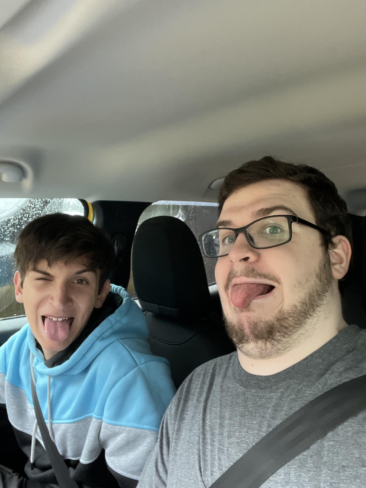

I am an aspiring independent developer. I'd be lying if I said I didn't want to make games, and haven't dabbled some already, but more realistic goals are in place of my future. Currently Majoring in computer programming, I intend to also get an Associates of Science, and a degree in CompSci. But all of this will come in due time. If you saw the code behind this, then you might realize I REALLY like playing around with this kind of stuff, and experimenting, even if I spent 30 minutes trying to learn how "@font-face" works.
I live in Fayetteville, NC, also known as Fayettenam to even my British friends (Page 2). I have several hobbies I like to dabble in (Page 3) but the foremost of all of them is gaming, baking, and my absolute love for my pets.
There comes a point in our lives where we realize that we made the image on the left too large and ran out of things to say because we want to save it for the next 2 pages, so then we have to rabble and break the fourth wall in order to make the page look prettier (Arbitrary link because the assignment required it).
I produce music and played piano for 15 years.
I'm currently 21 years old.
This is my third year in college.